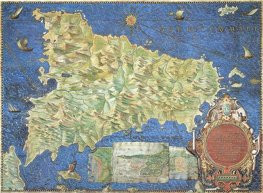

The World's Most Beloved Art Museums
This project maps many popular art museums globally.
Consistently, Musée du Louvre, located in Paris, France,
has been the most visited art museum. It houses some of
the world’s most famous artwork, including the elusive Mona Lisa
and the Venus de Milo. Recently, the Musei Vaticani in the
Vatican City have been the second-most visited. These museums
feature several renowned, quintessential Renaissance masterpieces,
such as the School of Athens and the Sistine Chapel.
The interactive map below is styled after the Gallery of Maps
in the Musei Vaticani. This gallery contains a series of painted
topographical maps commissioned by Pope Gregory XIII in the late
16th century. The walls of the gallery are covered with forty
different maps of various Italian regions, and the ceiling above
each map illustrates the major religious events of that area. The
maps showcase exquisitely beautiful, opulent detail. While this
ornamentation may not be possible to recreate as a Mapbox tileset,
some of the color palette, font styles, and textures are represented.
The interactive map also hosts several helpful features. The sequence
bar on the left allows one to sequence through 7 different time stamps
from 2015-2021. Clicking on each red proportional symbol will call a
pop-up with information about that museum. Generally, the data reveal
that museum attendance has flourished rapidly over time, only to be
majorly halted by many museum closures during the start of the pandemic
in 2020. Art museums have since struggled to regain solid visitation numbers.
This map data was sourced from the annual reports that these museums have
published. Unfortunately, many smaller, less popular museums had to be left
off this map, as their reports are not published publicly.

The interactive map below is styled after the Gallery of Maps
in the Musei Vaticani. This gallery contains a series of painted
topographical maps commissioned by Pope Gregory XIII in the late
16th century. The walls of the gallery are covered with forty
different maps of various Italian regions, and the ceiling above
each map illustrates the major religious events of that area. The
maps showcase exquisitely beautiful, opulent detail. While this
ornamentation may not be possible to recreate as a Mapbox tileset,
some of the color palette, font styles, and textures are represented.
The interactive map below is styled after the Gallery of Maps
in the Musei Vaticani. This gallery contains a series of painted
topographical maps commissioned by Pope Gregory XIII in the late
16th century. The walls of the gallery are covered with forty
different maps of various Italian regions, and the ceiling above
each map illustrates the major religious events of that area. The
maps showcase exquisitely beautiful, opulent detail. While this
ornamentation may not be possible to recreate as a Mapbox tileset,
some of the color palette, font styles, and textures are represented.